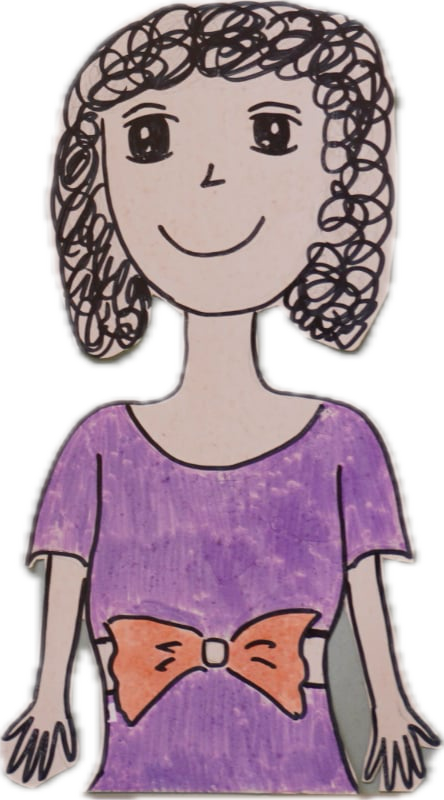
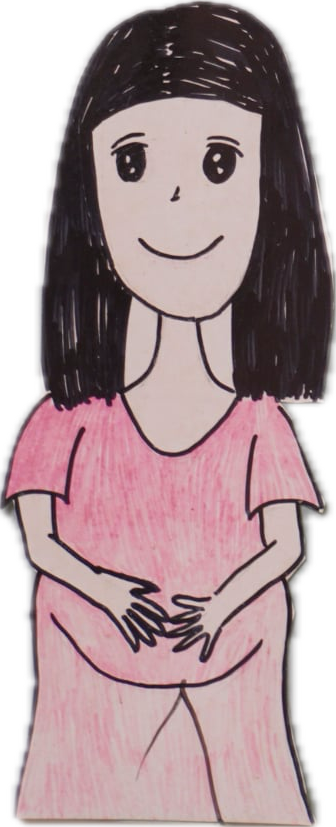
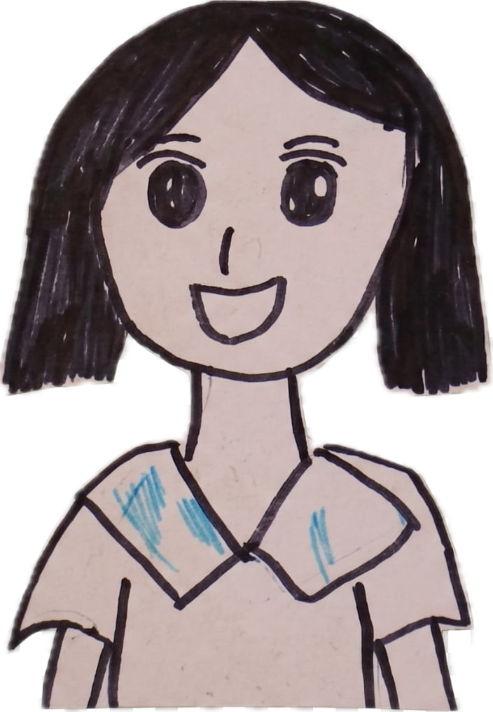

緣起
「剛好遇到我女兒」
「我並不是為了領養一個小孩而去領養，而是剛好遇到我女兒。」坐在自家經營的藥局內，貝貝媽（化名）回想起十八年前與女兒相遇的過程。
當時她在愛慈社會福利基金會擔任週末的寄養家庭義工，將才四個月大、因生父母藥癮而成為「毒寶寶」的貝貝帶回家過週末，直到週一早上再送回機構。
外公在病床上對著她先生說：「貝貝需要一個爸爸，也需要受教育，請你們讓他受教育。」
貝貝在一歲十個月大時，正式成為了他們的女兒。然而，這樣的故事對更多等待出養的特殊需求孩子，依然是遙不可及的夢。
深入了解貝貝的故事
圖：貝貝與養母 ／ 圖片提供

貝貝心中的生母曾是毒癮者，在監所病逝。貝貝長大後才透過 Google 找到她的名字，出現在法院判決書裡。

貝貝媽（化名）養母。從義工到媽媽，陪伴貝貝走過十八年，大小每一次「卡住」。

社工連結機構、法院與家庭，是每段收養故事背後不可缺少的橋樑。